Parley iOS · Ist-Stand hell · 18.10.2026
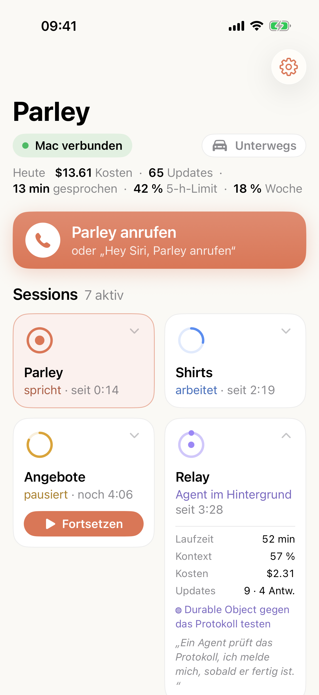
01 · Übersicht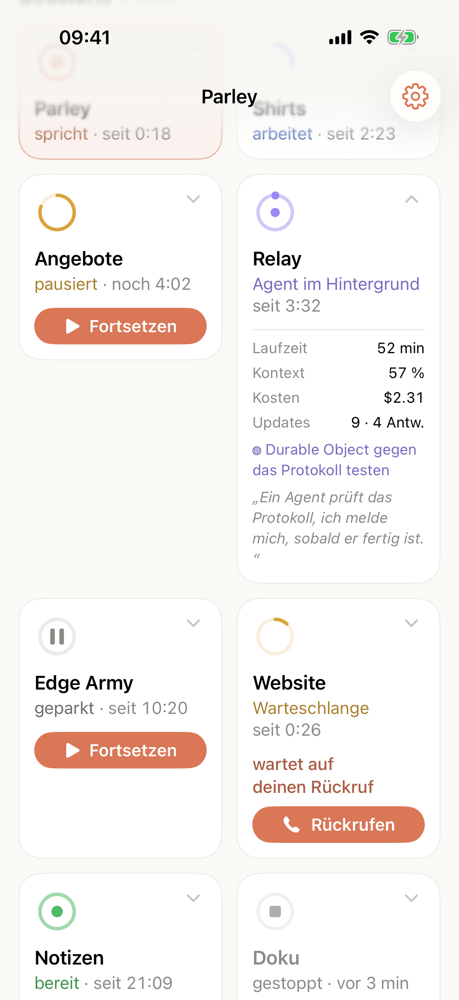
02 · Übersicht (gescrollt)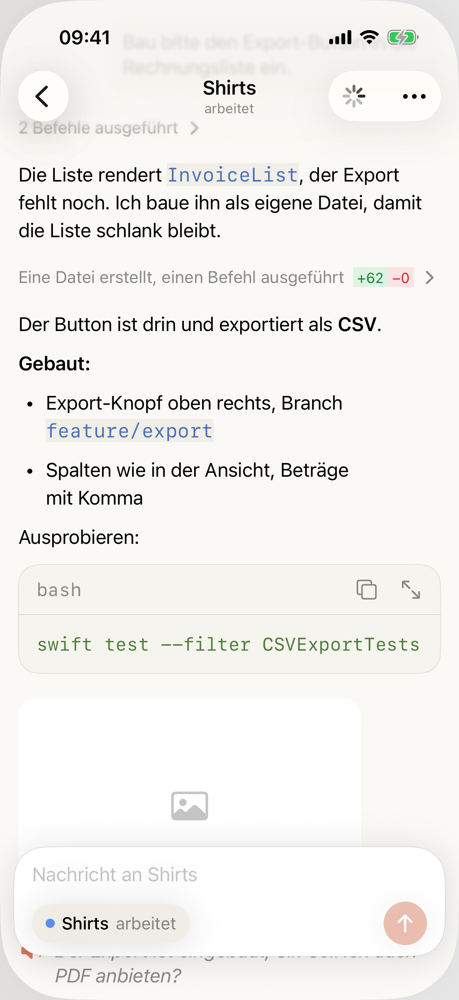
03 · Session-Detail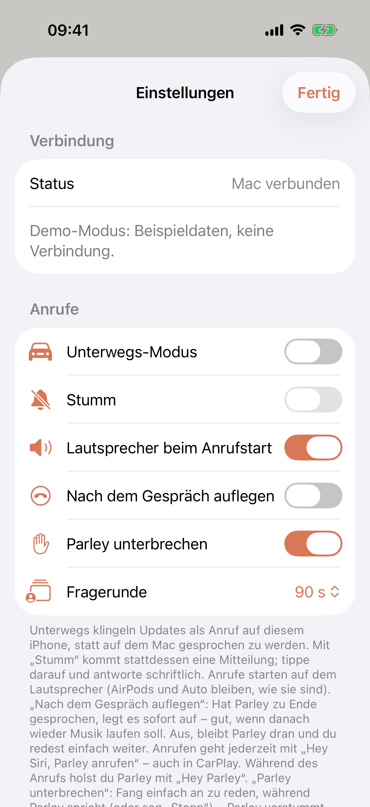
10 · Einstellungen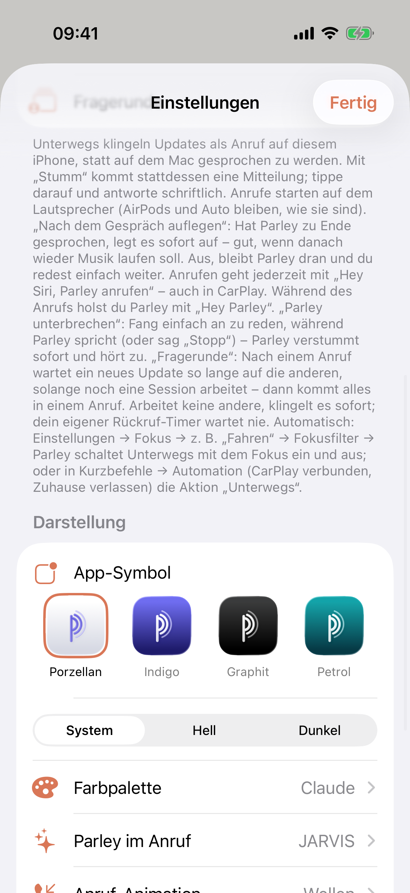
11 · Einstellungen (Mitte)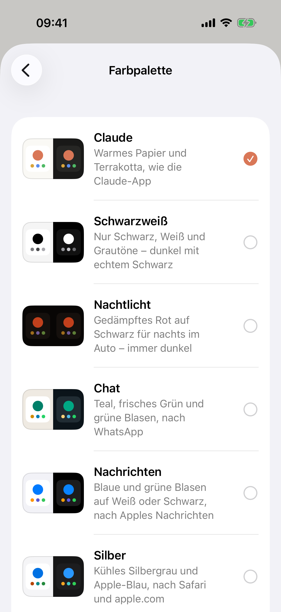
12 · Farbpalette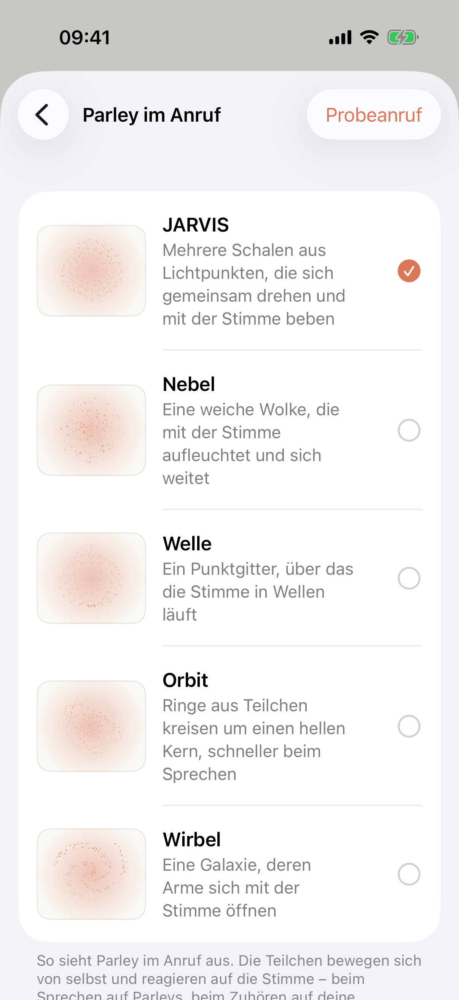
13 · Parley im Anruf (Kugel)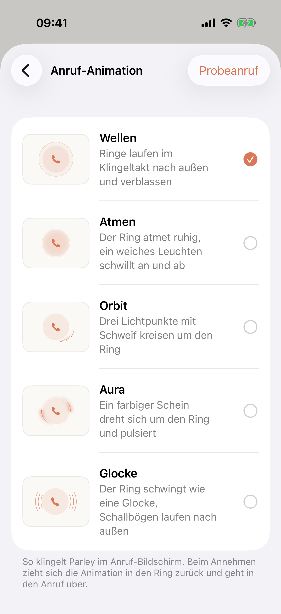
14 · Anruf-Animation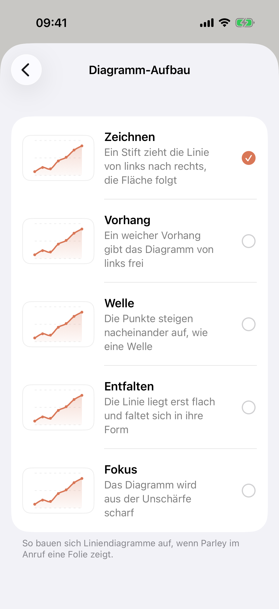
15 · Diagramm-Aufbau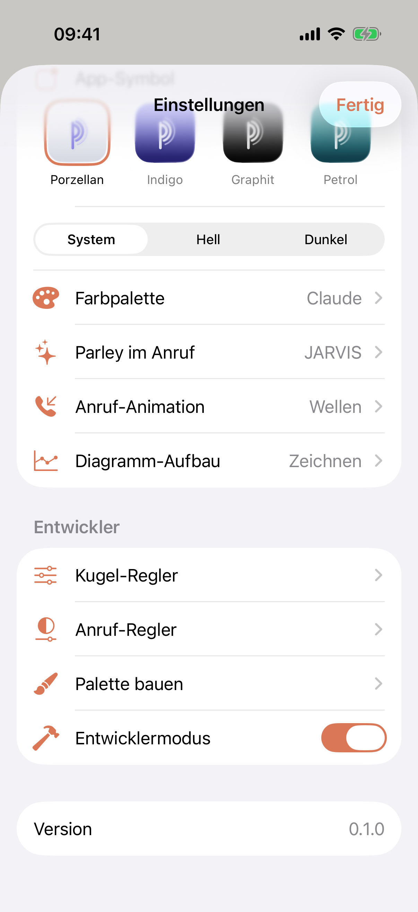
16 · Einstellungen (unten, Entwickler)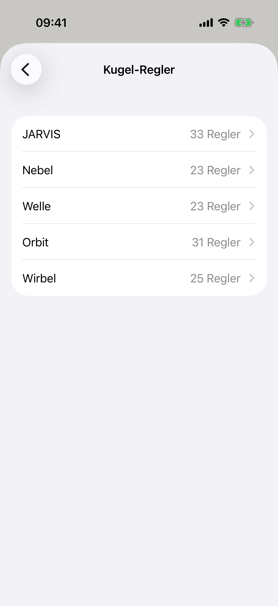
17 · Kugel-Regler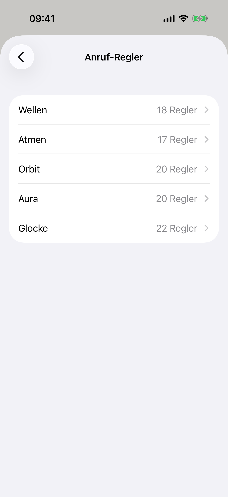
19 · Anruf-Regler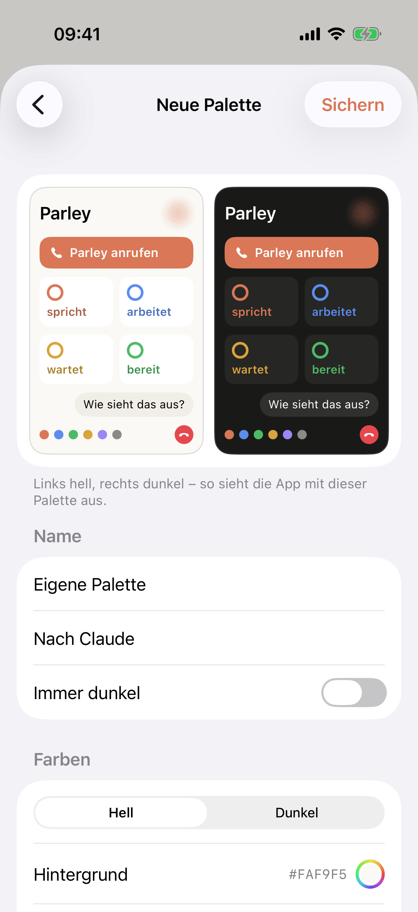
21 · Palette bauen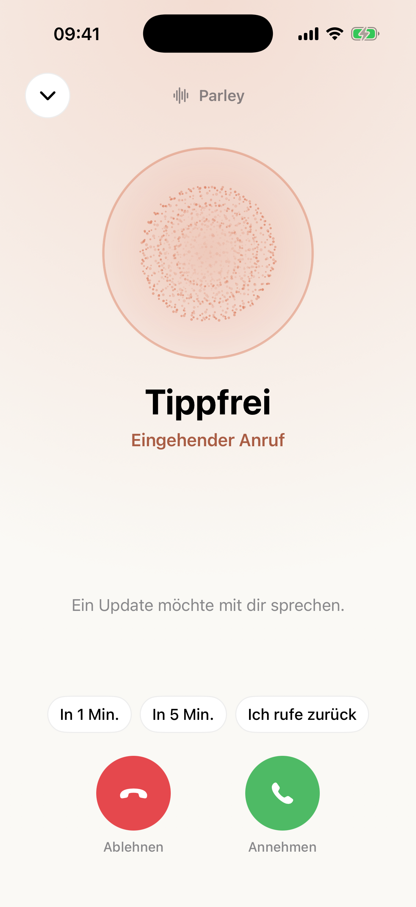
30 · Anruf: eingehend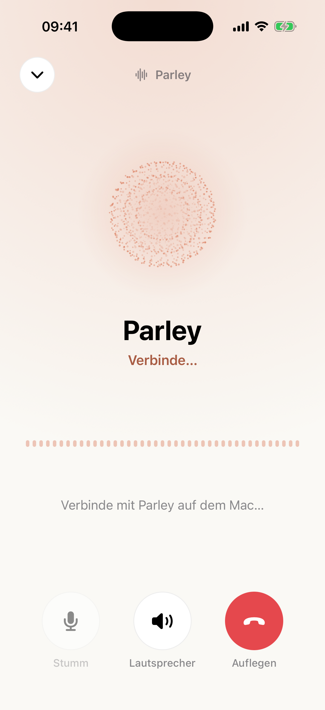
31 · Anruf: verbindet32 · Anruf: Parley spricht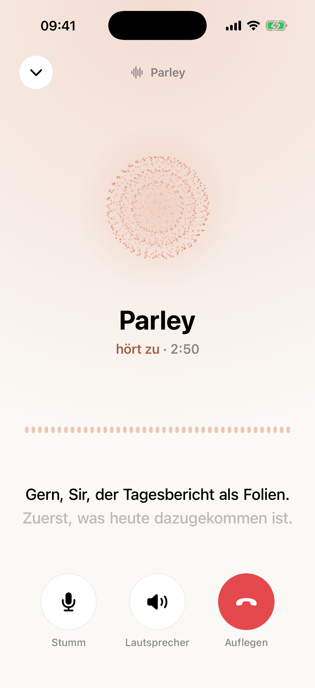
33 · Anruf: hört zu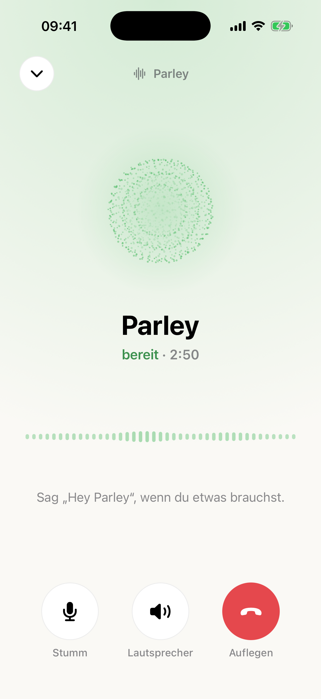
34 · Anruf: still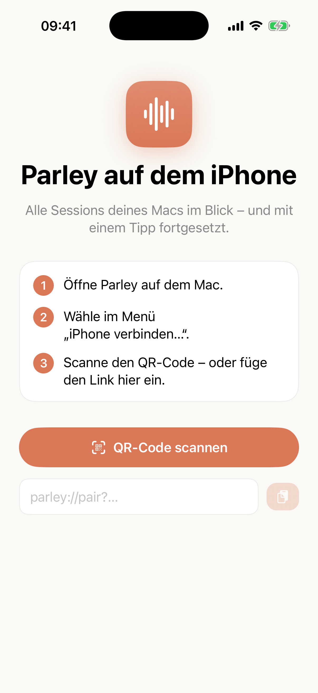
40 · Kopplung (nicht verbunden)